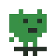
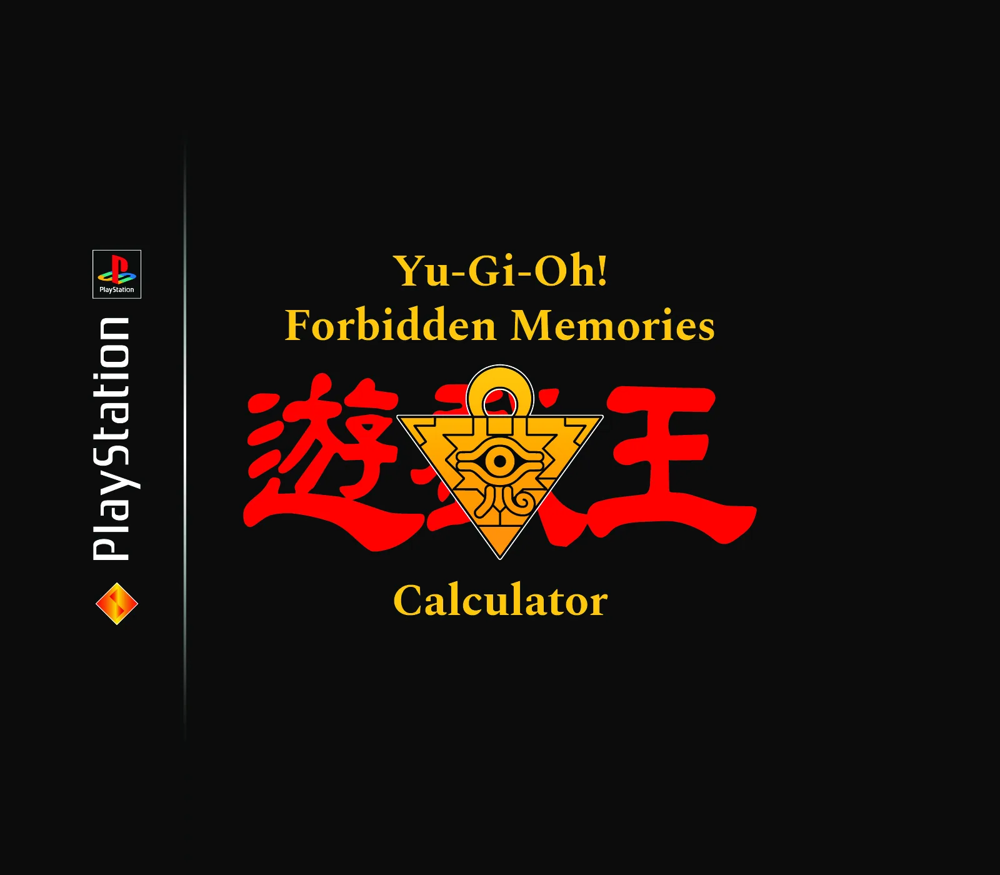
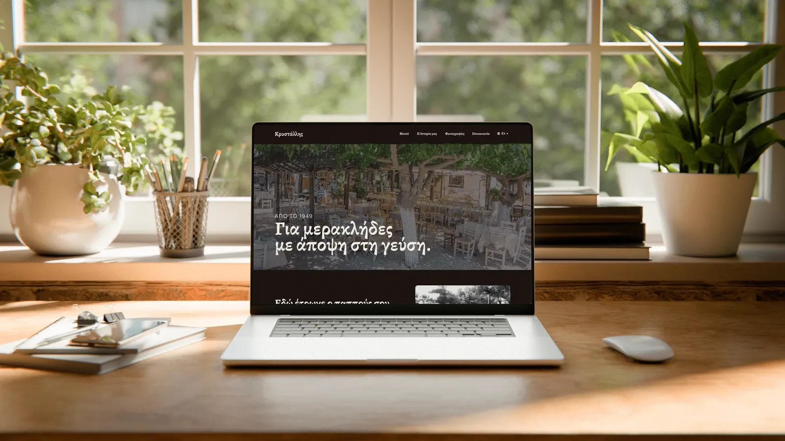
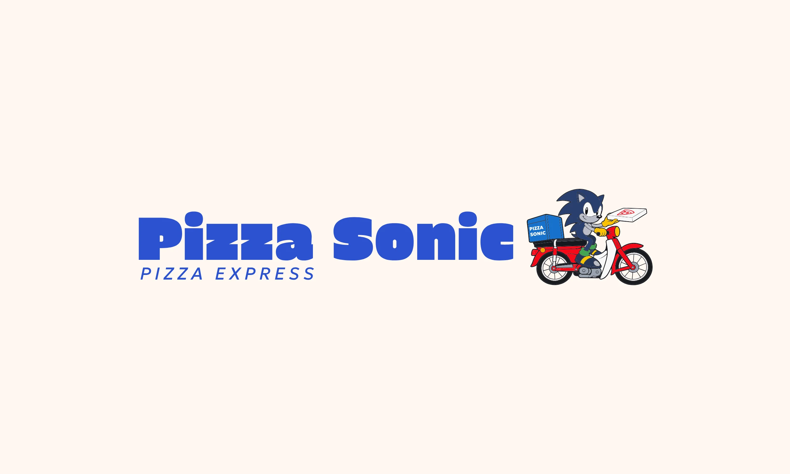
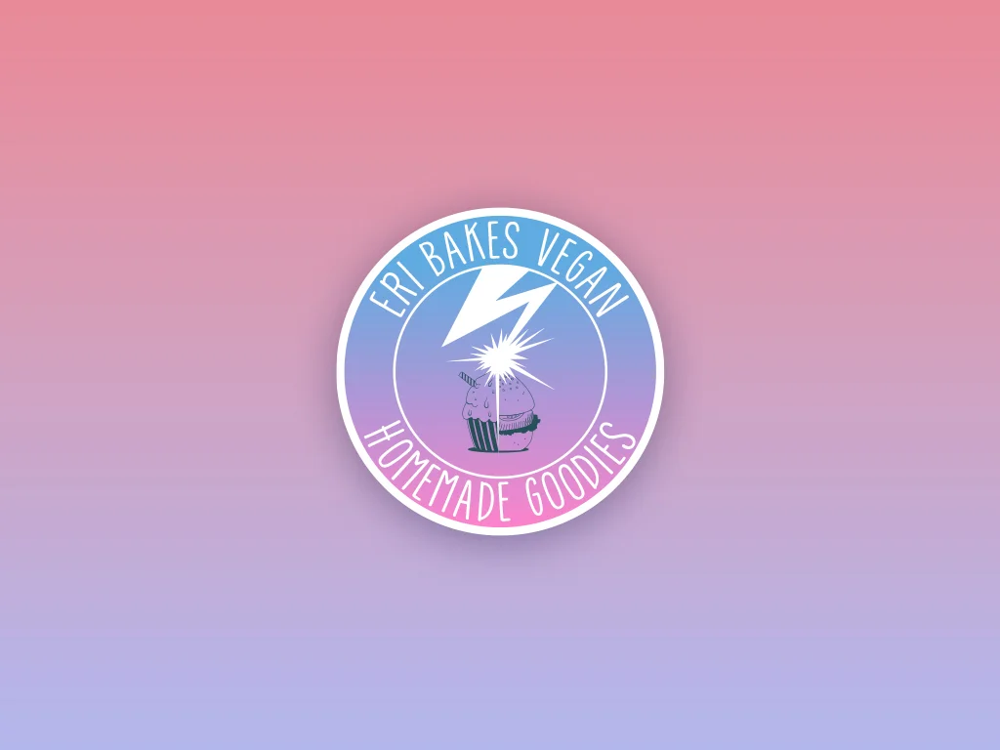

Home
Projects

Self-initiated
Forbidden Memories
Fusion Calculator
722 cards.Zero guesswork.
Open case study
Self-initiated
Krystallis
77 years of tradition.Now easy to find online.
Open case study
Self-initiated
Pizza Sonic
Old school pizza.New school site.
Open case study
Client project
Eri Bakes Vegan
Vegan in Greece before it was a trend.Still a trend ahead.
Open case study